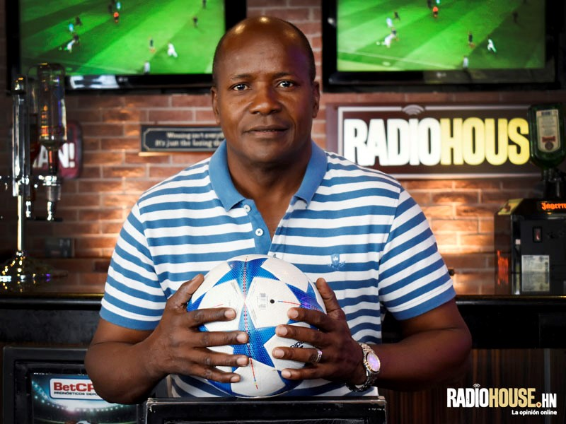
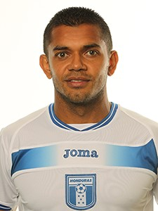
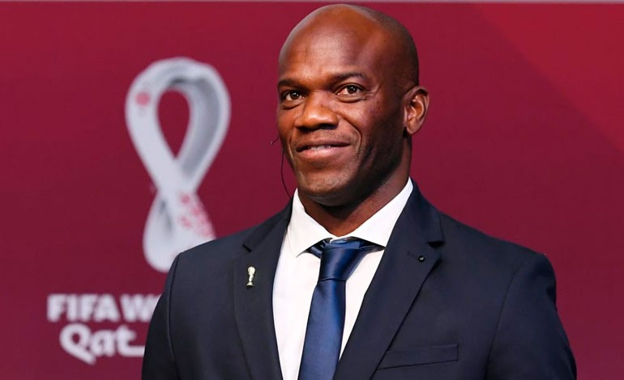
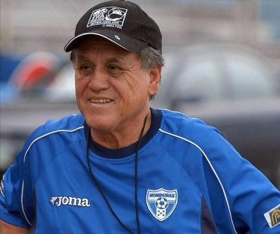

Carlos Alberto Plummer Pavón
nació en el Progreso, Yoro, Honduras el 9 de octubre de 1973.
Realizó sus estudios primarios y secundarios en la escuela Manuel Bonilla. Carlos debutó con el club
Real de España, anotando al Marathón el 30 de mayo de 1992, Debido al éxito con el club Carlos Pavón
llego a anotar más de 100 goles, el club Real de España es de la ciudad de San Pedro Sula, donde hoy
en día es conocido Carlos como “El Ídolo “.
es el máximo anotador en la historia con 57 goles, con la selección Nacional de Honduras.

Milton “Jocón” Reyes
Nació en el Arenal, Yoro, Honduras el 2 de mayo de 1972.
arrancó su carrera con el Yoro Fútbol Club. Después pasó al Independiente Villela, club con el que
debutó en la Liga Nacional de Honduras el 24 de septiembre de 1995 durante una derrota de 0-1 ante
el Club Deportivo Vida. Posteriormente, en 1997, fichó por el Fútbol Club Motagua, donde conquistó
una buena cantidad de títulos.
El 7 de marzo de 2002 fichó por el D. C. United de la Major League Soccer de Estados Unidos.

Milton "Tyson" Nuñez
Nació en Sambo Creek, La Ceiba, Honduras el 30 de octubre de 1972.
Ha sido internacional con la Selección de fútbol de Honduras en más de 35 ocasiones. Con el
representativo nacional de Honduras, Tyson obtuvo la Copa UNCAF en dos oportunidades.
También participó en las eliminatorias de Corea Japón 2002, y Alemania 2006, sin lograr clasificar a
la Copa Mundial de la FIFA.
En el 2007, el seleccionador de Honduras: Reynaldo Rueda, lo convocó en varias oportunidades a
formar parte del elenco nacional. Fue así como este jugador, tuvo la oportunidad de ser parte del
proceso rumbo a Sudáfrica 2010.

Ramon Enrique Maradiaga
Nació en Amapala, Honduras, el 30 de noviembre de 1954.
Honduras con Maradiaga al mando, continúo su racha ascendente al clasificar en el 2000 por primera
vez en la historia del fútbol olímpico de Honduras, a los juegos olímpicos de Sídney Australia,
después de eliminar a México y quedar campeón en la categoría SUB-23 de la Concacaf en un torneo
celebrado en Pensilvania, Estados Unidos.
En el verano del 2001, Argentina se negó a participar en el torneo de la Copa América de Colombia,
por lo que Honduras fue invitada de emergencia, a llenar la vacante dejada por los argentinos. -
Después de haber aceptado la invitación, Maradiaga tuvo que conformar una selección emergente,
armada prácticamente en el avión debido a la escasez de tiempo.

Gilberto Yearwood
Es originario de San Pedro Sula, Honduras, nació el 15 de marzo de 1956, lo apodaban el «Vikingo».
Es considerado el Mejor Futbolista hondureño de todos los tiempos, Gilberto Yearwood, debido a su
liderazgo y calidad en el terreno de juego, otorgado en 2006 por la FIFA.
En el año 1974 Gilberto con 17 años, jugaba ya en el Real Club Deportivo España, donde logró su
primer titulo de la Liga Nacional de Honduras.
Luego en el año 1976, Gilberto fue convocado por el entrenador Rodolfo ‘Popo’ Godoy, para la
selección juvenil.
Fue cunado participó en el PRE-mundial de Puerto Rico, torneo que Gilberto se destacó enormemente.
Logrando la primera clasificación de Honduras a una competencia mundial, junto a una de las mejores
generaciones del fútbol catracho.

Amado Guevara Rinaldi
Nacio el 2 de mayo de 1976 en la ciudad de Tegucigalpa.
El ’Lobo’ comenzó su carrera futbolística jugando para el Club Deportivo Motagua de Tegucigalpa en
Honduras. En ese Club, este jugador se coronó campeón en las temporadas: 1997-1998 Ap., 1997-1998
Cl., 1999-2000 Ap., 1999-2000. Amado Guevara ha sido uno de los jugadores con más partidos
internacionales, vistiendo la camisa de la selección de fútbol de Honduras.
A través de su amplio recorrido con la camisa nacional de Honduras; Amado tuvo la oportunidad de
disputar tres eliminatorias mundialistas, una Copa América, y un mundial Juvenil Sub.20 entre otros
torneos

Óscar David Suazo Velásquez
Nacio el 5 de noviembre de 1979 en la ciudad de San Pedro Sula.
En el año 2000, Suazo fue campeón olímpico de la Concacaf con la Sub-23. Fue así como David Suazo,
tuvo la oportunidad de participar en los Juegos Olímpicos de Sídney Australia 2000, donde Honduras
tuvo una aceptable participación, eliminando al anfitrión de la competencia. En estos juegos
olímpicos el David anotó cuatro goles, dos a Nigeria y dos a Australia.
Suazo se unió al Cagliari de la Serie A del fútbol italiano para la temporada (1999-2000).
En la temporada 2005-06, Suazo jugó su mejor temporada hasta la fecha, porque marcó 22 goles de los
37 partidos que disputó en su equipo y rompió el récord del mítico Gigi Riva. Fue así como se
convirtió en capitán y líder del club sardo.

José de la Paz Herrera
Nacio el 21 de noviembre de 1940 en el municipio de Soledad, El Paraiso.
Chelato fue capacitado como director técnico de fútbol en Buenos Aires, Argentina.
En el año de 1969, logrando 5 años después su primer titulo de La Liga Nacional con el Club
Deportivo España.
Luego en el año 1980 José de la Paz fue contratado por la Federación Nacional de Honduras.
Para dirigir el proceso clasificatorio rumbo al mundial de España 1982.
Lograron clasificar al mundial de fútbol y de su exitosa presentación en el 82.
José de la Paz, siguió al frente de la dirección de La H, en procesos de eliminatorias mundialistas.
Después, se dedico a dirigir clubes de la Liga Nacional de Honduras.
Con las que llego a ganar 5 títulos nacionales y 6 subcampeonatos con diferentes clubes.
Debido al éxito que tuvo en Honduras José Chelato, fue llamado por el Club Santos de México
Luego dirigió la selección de fútbol de Belice.